GIS Software
Surveyor: / Express: / Express Plus: / Facet: / Facet L-Band: / Reference Station:
While we recommend SW Maps for Android, there are a variety of 3rd party apps available for GIS and surveying. We will cover a few examples below that should give you an idea of how to get the incoming NMEA data over Bluetooth into the software of your choice.
SW Maps
The best mobile app that we’ve found is the powerful, free, and easy-to-use SW Maps by Softwel. It is compatible with Android and iOS, either phone or tablet with Bluetooth. What makes SW Maps truly powerful is its built-in NTRIP client. This is a fancy way of saying that we’ll be showing you how to get RTCM correction data over the cellular network.
Be sure your device is paired over Bluetooth.

List of available Bluetooth devices
From SW Map's main menu, select Bluetooth GNSS. This will display a list of available Bluetooth devices. Select the Rover or Base you just paired with. If you are taking height measurements (altitude) in addition to position (lat/long) be sure to enter the height of your antenna off the ground including any ARP offsets of your antenna (this should be printed on the side).
Click on 'CONNECT' to open a Bluetooth connection. Assuming this process takes a few seconds, you should immediately have a location fix.

SW Maps with RTK Fix
You can open the GNSS Status sub-menu to view the current data.
NTRIP Client
If you’re using a serial radio to connect a Base to a Rover for your correction data, or if you're using the RTK Facet L-Band with built-in corrections, you can skip this part.
We need to send RTCM correction data from the phone back to the RTK device so that it can improve its fix accuracy. This is the amazing power of the SparkFun RTK products and SW Maps. Your phone can be the radio link! From the main SW Maps menu select NTRIP Client. Not there? Be sure the 'SparkFun RTK' instrument was automatically selected connecting. Disconnect and change the instrument to 'SparkFun RTK' to enable the NTRIP Connection option.
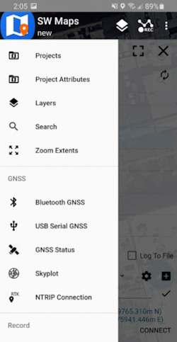
NTRIP Connection - Not there? Be sure to select 'SparkFun RTK' was selected as the instrument
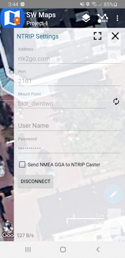
Connecting to an NTRIP Caster
Enter your NTRIP Caster credentials and click connect. You will see bytes begin to transfer from your phone to the RTK Express. Within a few seconds, the RTK Express will go from ~300mm accuracy to 14mm. Pretty nifty, no?
Once you have a full RTK fix you'll notice the location bubble in SW Maps turns green. Just for fun, rock your rover monopole back and forth on a fixed point. You'll see your location accurately reflected in SW Maps. Millimeter location precision is a truly staggering thing.
Field Genius
Field Genius for Android is another good solution, albeit a lot more expensive than free.
Be sure your device is paired over Bluetooth.

From the Main Menu open Select Instrument.

Click the 'Add Profile' button.

Click GNSS Rover and select NMEA as the Make. Set your Profile Name to something memorable like 'RTK-Express' then click the 'Create' button.

Click on 'SET UP COMMUNICATION'.

From the Bluetooth communication page, click the 'Search' button.

You will be shown a list of paired devices. Select the RTK device you'd like to connect to then click 'Connect'. The RTK device will connect and the MAC address shown on the RTK device OLED will change to the Bluetooth icon indicating a link is open.
NTRIP Client
If you’re using a serial radio to connect a Base to a Rover for your correction data, or if you're using the RTK Facet L-Band with built-in corrections, you can skip this part.

We need to send RTCM correction data from the phone back to the RTK device so that it can improve its fix accuracy. Your phone can be the radio link! Click on 'SET UP CORRECTIONS'.

Click on 'RTK via Internet' then 'SET UP INTERNET', then 'Done'.

Click on 'SET UP DATA SOURCE'.

Click 'Add New Source'.

Enter your NTRIP Caster credentials and click 'DONE'.
What's an NTRIP Caster? In a nutshell, it's a server that is sending out correction data every second. There are thousands of sites around the globe that calculate the perturbations in the ionosphere and troposphere that decrease the accuracy of GNSS accuracy. Once the inaccuracies are known, correction values are encoded into data packets in the RTCM format. You, the user, don't need to know how to decode or deal with RTCM, you simply need to get RTCM from a source within 10km of your location into the RTK Express. The NTRIP client logs into the server (also known as the NTRIP caster) and grabs that data, every second, and sends it over Bluetooth to the RTK Express.
Don't have access to an NTRIP Caster? You can use a 2nd RTK product operating in Base mode to provide the correction data. Checkout Creating a Permanent Base. If you're the DIY sort, you can create your own low-cost base station using an ESP32 and a ZED-F9P breakout board. Check out How to Build a DIY GNSS Reference Station](https://learn.sparkfun.com/tutorials/how-to-build-a-diy-gnss-reference-station). If you'd just like a service, Syklark provides RTCM coverage for $49 a month (as of writing) and is extremely easy to set up and use. Remember, you can always use a 2nd RTK device in Base mode to provide RTCM correction data but it will be less accurate than a fixed position caster.
Click 'My NTRIP1' then 'Done' and 'Connect'.
You will then be presented with a list of Mount Points. Select the mount point you'd like to use then click 'Select' then 'Confirm'.
Select 'Done' then from the main menu select 'Survey' to begin using the device.

Now you can begin using the SparkFun RTK device with Field Genius.
SurvPC
Note: The company behind SurvPC, Carlson Software, is not always welcoming to competitors of their $18,000 devices, so be warned.
Be sure your device is paired over Bluetooth.

Equip Sub Menu
Select the Equip sub menu then GPS Rover

Select NMEA GPS Receiver
From the drop down, select NMEA GPS Receiver.

Select Model: DGPS
Select DGPS if you'd like to connect to an NTRIP Caster. If you are using the RTK Facet L-Band, or do not need RTK fix type precision, leave the model as Generic.

Bluetooth Settings Button
From the Comms submenu, click the Blueooth settings button.

SurvPC Bluetooth Devices
Click Find Device.

List of Paired Bluetooth Devices
You will be shown a list of devices that have been paired. Select the RTK device you want to connect to.

Connect to Device
Click the Connect Bluetooth button, shown in red in the top right corner. The software will begin a connection to the RTK device. You'll see the MAC address on the RTK device changes to the Bluetooth icon indicating it's connected.
If SurvPC detects NMEA, it will report a successful connection.

Receiver Submenu
You are welcome to enter the ARP (antenna reference point) and surveying stick length for your particular setup.
NTRIP Client
Note: If you are using a radio to connect Base to Rover, or if you are using the RTK Facet L-Band you do not need to set up NTRIP; the device will achieve RTK fixes and output extremely accurate location data by itself. But if L-Band corrections are not available, or you are not using a radio link, the NTRIP Client can provide corrections to this Rover.

RTK Submenu
If you selected 'DGPS' as the Model type, the RTK submenu will be shown. This is where you give the details about your NTRIP Caster such as your mount point, user name/pw, etc. For more information about creating your own NTRIP mount point please see Creating a Permanent Base
Enter your NTRIP Caster credentials and click connect. You will see bytes begin to transfer from your phone to the RTK Express. Within a few seconds, the RTK Express will go from ~300mm accuracy to 14mm. Pretty nifty, no?
What's an NTRIP Caster? In a nutshell, it's a server that is sending out correction data every second. There are thousands of sites around the globe that calculate the perturbations in the ionosphere and troposphere that decrease the accuracy of GNSS accuracy. Once the inaccuracies are known, correction values are encoded into data packets in the RTCM format. You, the user, don't need to know how to decode or deal with RTCM, you simply need to get RTCM from a source within 10km of your location into the RTK Express. The NTRIP client logs into the server (also known as the NTRIP caster) and grabs that data, every second, and sends it over Bluetooth to the RTK Express.
Don't have access to an NTRIP Caster? You can use a 2nd RTK product operating in Base mode to provide the correction data. Checkout Creating a Permanent Base. If you're the DIY sort, you can create your own low-cost base station using an ESP32 and a ZED-F9P breakout board. Check out How to Build a DIY GNSS Reference Station](https://learn.sparkfun.com/tutorials/how-to-build-a-diy-gnss-reference-station). If you'd just like a service, Syklark provides RTCM coverage for $49 a month (as of writing) and is extremely easy to set up and use. Remember, you can always use a 2nd RTK device in Base mode to provide RTCM correction data but it will be less accurate than a fixed position caster.
Once everything is connected up, click the Green check in the top right corner.

Storing Points
Now that we have a connection, you can use the device, as usual, storing points and calculating distances.

SurvPC Skyplot
Opening the Skyplot will allow you to see your GNSS details in real-time.
If you are a big fan of SurvPC please contact your sales rep and ask them to include SparkFun products in their Manufacturer drop-down list.
Survey Master
Survey Master by ComNam / SinoGNSS is an Android-based option. The download location can vary so google 'Survey Master ComNav Download' if the link above fails. Download the zip file, send the APK file to a phone and install the program.

By default, a wizard will guide you through the setup. The Project step will ask you for the name of the project, the datum, etc.

Next select your connection.

For the Device Model select 'NMEA Device'.

If you are just getting started, use one of the default antenna types. If you are attempting to get sub-centimeter accuracy, enter the parameters of your antenna and add it. Above are the NGS-certified parameters for the TOP106 antenna.

Click the 'Target Device' option to get a list of available Bluetooth devices. Make sure your RTK product is on and you should see the device. In this example 'Express Rover-B022' was chosen.
To finish, click 'Connect'. You should see the Bluetooth MAC address on your RTK product change to the Bluetooth icon indicating a connection is established.

Next is configuring the 'Work mode' of the device. The step is where we set up our NTRIP correction source.

Click 'Add' to create a new work mode.

Shown above, we configure the NTRIP Client. Survey Master calls this the 'SinoGNSS' Protocol. Click on the three bars to the right of 'Server' to enter a new NTRIP connection.

Here you can add different NTRIP Caster providers. If you're using RTK2Go be sure to enter your contact email into the user name.
Return to the 'Datalink type' window and select the Server you just entered. Re-enter the server address and port for your NTRIP Caster. Once complete, click on the down-pointing arrow. This will ping the Caster and obtain the mount point table. Select your mount point.

Select the newly created work mode and press the 'Apply' button.

Survey Master will attempt to connect to your specified RTK corrections source (NTRIP Caster). Upon success, you will be located on the Project menu.
Survey Master expects many more NMEA sentences than most GIS software. We must enable some additional messages on the RTK device to correctly communicate with Survey Master.

Note above: There are 9 enabled messages and GSV is set to '1'.
Connect to the RTK device either over WiFi AP config or via Serial. Above is shown the serial method.
Open a terminal at 115200bps and press a key to open the serial configuration menu. Press '2' for GNSS Messages, press '1' for NMEA messages, now be sure to enable 9 messages to a rate of 1:
- GGA
- GLL
- GRS
- GSA
- GST
- GSV
- RMC
- VTG
- ZDA
Once complete, press x until you exit the serial menus. Now we may return to Survey Master.

Click on the 'Survey' menu and then 'Topo Survey'. Above we can see a device with RTK float, and 117mm horizontal positional accuracy.
Known Issues:
- Survey Master parses the GxGSV sentence improperly and will only indicate GPS satellites even though the fix solution is using all satellites.

To verify the NMEA sentences are being delivered correctly, Survey Master has a built-in tool. Select the Device->Rover->More->'H-Terminal'.
Vespucci
Vespucci is an Open Street Map editor for Android.
This software requires the RTK device to connect over TCP. Be sure you have a local WiFi network entered into the WiFi Config menu, have a TCP Client or Server enabled, and have noted the TCP port (it's 2947 by default).

With a map open, select the gear icon on the bottom bar.

From the Preferences menu, scroll to the bottom and select 'Advanced Preferences'.

Select Location settings.

Select GPS/GNSS source. Select NMEA from TCP client. TCP server is also supported.

Select NMEA network source. Enter the IP address and TCP port of the RTK device. The IP address can be found by opening a serial terminal while connected to WiFi (it is reported every few seconds). The TCP port is entered into the WiFi Config menu.

Close all menus and you should see your location within Vespucci.
QGIS
QGIS is a free and open-source geographic information system software for desktops. It's available here.
Once the software is installed open QGIS Desktop.

Open the View Menu, then look for the 'Panels' submenu.

From the Panels submenu, enable 'GPS Information'. This will show a new panel on the left side.
At this point, you will need to enable TCP Server mode on your RTK device from the WiFi Config menu. Once the RTK device is connected to local WiFi QGIS will be able to connect to the given IP address and TCP port.

Above: From the subpanel, select 'gpsd'.

Enter the IP address of your RTK device. This can be found by opening a serial connection to the device. The IP address will be displayed every few seconds. Enter the TCP port to use. By default an RTK device uses 2947.
Press 'Connect'.

The device location will be shown on the map. To see a map, be sure to enable OpenStreetMap under the XYZ Tiles on the Browser.

Alternatively, a direct serial connection to the RTK device can be obtained. Use a USB cable to connect to the 'CONFIG UBLOX' port on RTK Surveyor/Express/Plus and the single USB C port on the RTK Facet/L-Band. Be sure you have the u-blox driver installed. Then select the appropriate COM port for the u-blox module. See Configure with Serial for more information.
QField

QField is a free GIS the Android app that runs QGIS.

The 'Reset to Surveying Defaults' button
First, configure the RTK device to output only NMEA messages. QField currently does not correctly parse other messages such as RAWX or RTCM so these will interfere with communication if they are enabled.
These RTK device settings can be found under the Messages menu through the WiFi config page or through the Serial Config menu.

Create an account and project on QFieldCloud. This project will be synchronized and viewable on the QField app.

Refresh Projects button
Once the project is created, press the Refresh projects list button to update the list. Then select your project.

'Hamburger' menu in upper right corner
Press the icon in the top left corner of the app to open the project settings.

Project settings
From the project settings menu, press the gear icon to open the device settings dropdown menu.

Project settings submenu
From the submenu, select 'Settings'.

Positioning Menu
Select the Positioning Menu. Then, with your RTK device on and in normal mode (not AP Config) press the Scan button in the QField app to update the dropdown list of available Bluetooth devices. If your device is not detected, be sure you've paired your cellphone or laptop with Bluetooth.
Once connected exit out of the menus and see position information within your project.
Apple iOS
The software options for Apple iOS are much more limited because Apple products do not support Bluetooth SPP. That's ok! The SparkFun RTK devices support Bluetooth Low Energy (BLE) which does work with iOS.
We recommend SWMaps for iOS. SWMaps is available for iOS here.
More information is available on the System Menu for switching between Bluetooth SPP and BLE.
To begin:
Make sure your RTK device is switched on, in Rover mode and operating in Bluetooth BLE mode.
Make sure Bluetooth is enabled on your iOS device Settings.
The RTK device will not appear in the OTHER DEVICES list. That is OK.
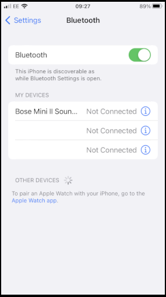
iOS Settings Bluetooth
Open SWMaps.
Open or continue a Project if desired.
SWMaps will show your approximate location based on your iOS device's location.
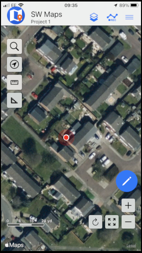
iOS SWMaps Initial Location
Press the 'SWMaps' icon at the top left of the screen to open the menu.
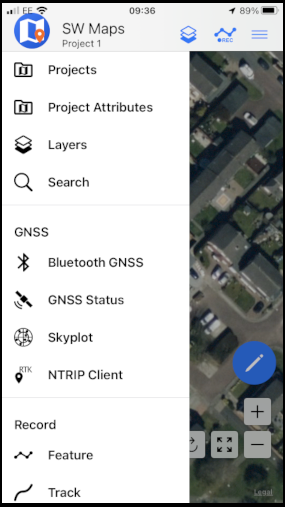
iOS SWMaps Menu
Select Bluetooth GNSS.
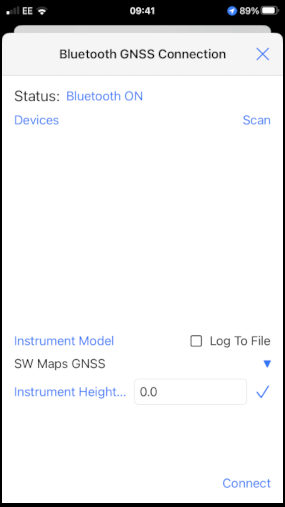
iOS SWMaps Bluetooth Connection
Set the Instrument Model to Generic NMEA (Bluetooth LE).
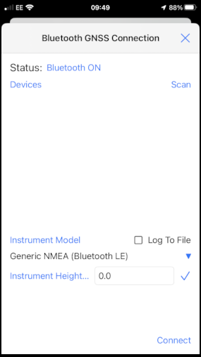
iOS SWMaps Instrument Model
Press 'Scan' and your RTK device should appear.
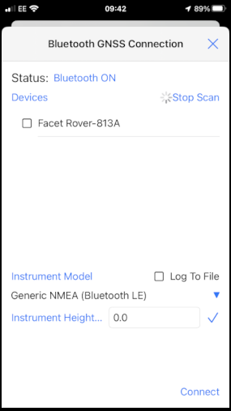
iOS SWMaps Bluetooth Scan
Select (tick) the RTK device and press 'Connect'.
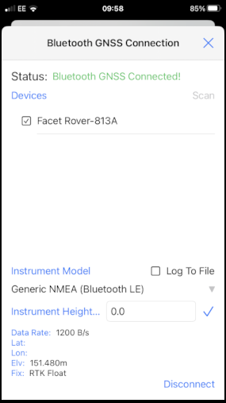
iOS SWMaps Bluetooth Connected
Close the menu and your RTK location will be displayed on the map.
You can now use the other features of SWMaps, including the built-in NTRIP Client.
Re-open the menu and select 'NTRIP Client'.
Enter the details for your NTRIP Caster - as shown in the SWMaps section above.
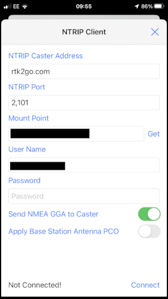
iOS SWMaps NTRIP Client
Click 'Connect'
At this point, you should see a Bluetooth Pairing Request. Select 'Pair' to pair your RTK with your iOS device.
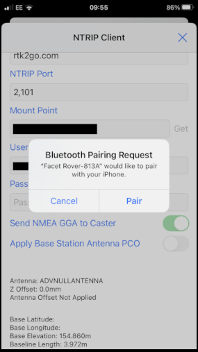
iOS Bluetooth Pairing
SWMaps will now receive NTRIP correction data from the caster and push it to your RTK over Bluetooth BLE.
From the SWMaps menu, open 'GNSS Status' to see your position, fix type and accuracy.
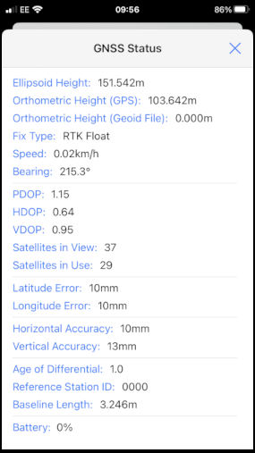
iOS SWMaps GNSS Status
If you return to the iOS Bluetooth Settings, you will see that your iOS and RTK devices are now paired.
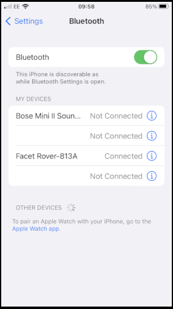
iOS Settings Bluetooth - Paired
Other GIS Packages
Hopefully, these examples give you an idea of how to connect the RTK product line to most any GIS software. If there is other GIS software that you'd like to see configuration information about, please open an issue on the RTK Firmware repo and we'll add it.
What's an NTRIP Caster?
In a nutshell, it's a server that is sending out correction data every second. There are thousands of sites around the globe that calculate the perturbations in the ionosphere and troposphere that decrease the accuracy of GNSS accuracy. Once the inaccuracies are known, correction values are encoded into data packets in the RTCM format. You, the user, don't need to know how to decode or deal with RTCM, you simply need to get RTCM from a source within 10km of your location into the RTK Express. The NTRIP client logs into the server (also known as the NTRIP caster) and grabs that data, every second, and sends it over Bluetooth to the RTK Express.
Where do I get RTK Corrections?
Be sure to see Correction Sources.
Don't have access to an NTRIP Caster or other RTCM correction source? There are a few options.
The SparkFun RTK Facet L-Band gets corrections via an encrypted signal from geosynchronous satellites. This device gets RTK Fix without the need for a WiFi or cellular connection.
Also, you can use a 2nd RTK product operating in Base mode to provide the correction data. Check out Creating a Permanent Base.
If you're the DIY sort, you can create your own low-cost base station using an ESP32 and a ZED-F9P breakout board. Check out How to Build a DIY GNSS Reference Station.
There are services available as well. Syklark provides RTCM coverage for $49 a month (as of writing) and is extremely easy to set up and use. Point One also offers RTK NTRIP service with a free 14 day trial and easy to use front end.